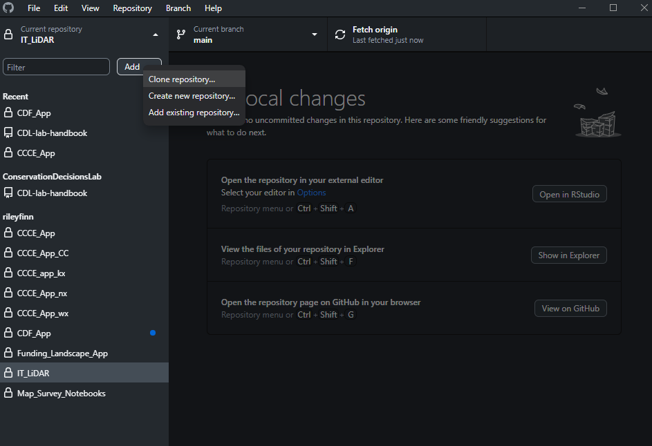
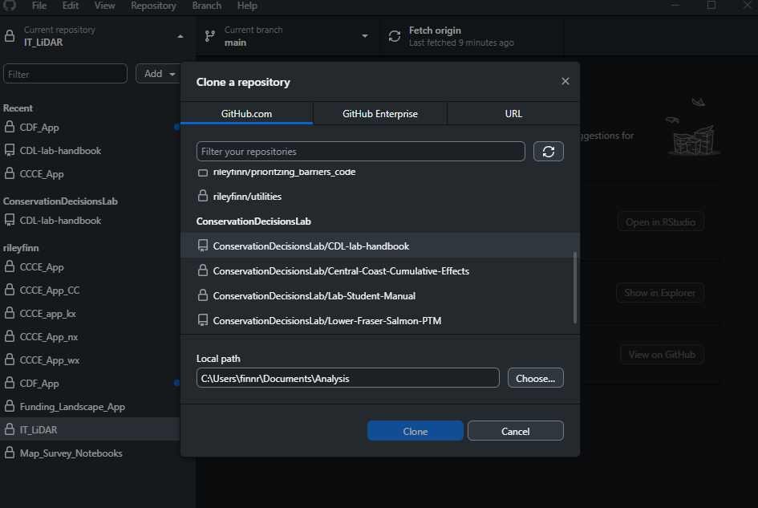
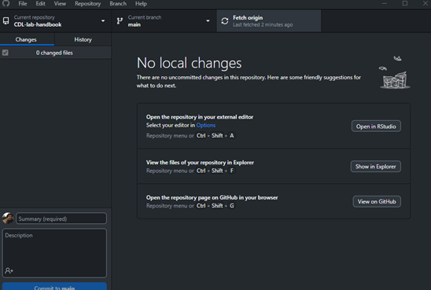
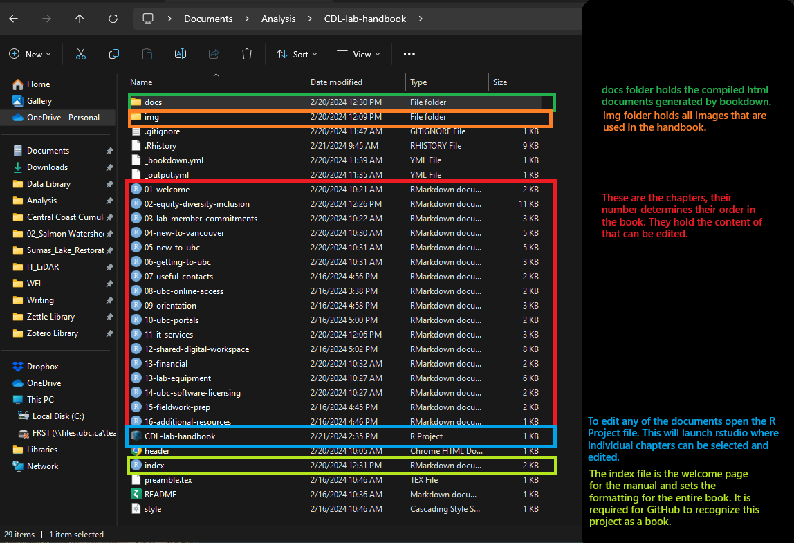
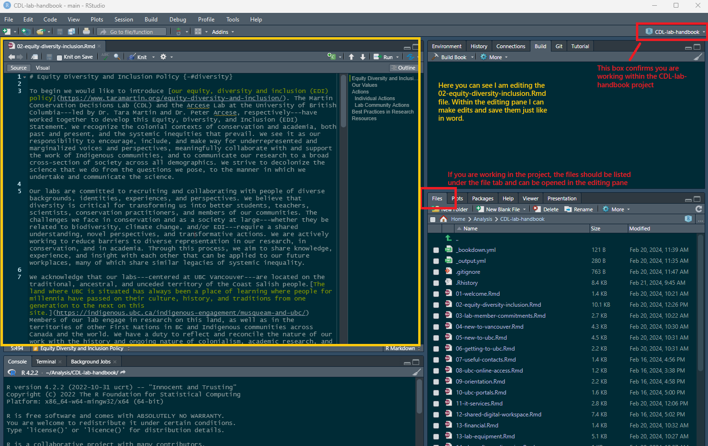
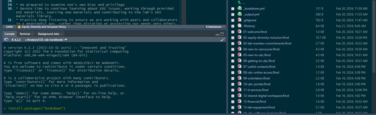
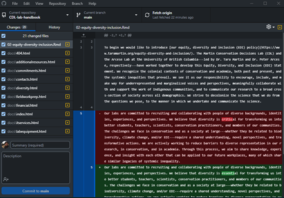
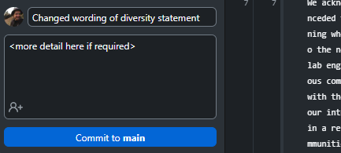
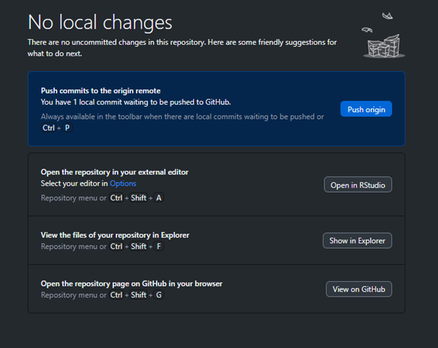
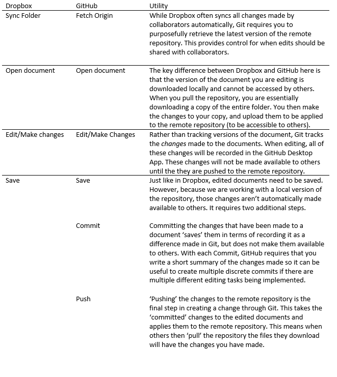

How to Contribute to the Handbook
1. Download GitHub Desktop
I use the desktop version of GitHub. I find it is the most intuitive way to work with the program and the website. There is an installation tutorial here.
2. Clone the Handbook Repository
The first time you download a repository from a remote location you are creating a clone (Figure 1). This is the local version of the repository that lives on your computer. It is analogous to adding a shared folder in Dropbox.
 Figure 1: Cloning the repository to the local device.
You will need to be part of the Conservation Decisions Lab Organization to see the available repositories. When you click on the ‘ConservationDecisionsLab/CDL-lab-handbook’ repository it will allow you to select where you would like to save the files locally (Figure 2). This is where you will be working with contents of the Handbook.
 Figure 2: Selecting the handbook repository and a storage location for the files on your device. Here I am saving the repository in my Documents/Analysis folder.
Once you’ve cloned repository you are ready to start editing the files!
3. Workflow for Editing the Handbook
3.1 Pull the Latest Version of Repository
This should always be your first step when you are beginning to work on a new edit for the manual. This step essentially downloads any changes that may have been made by others. You can think of it like manually asking Dropbox for the latest version of a document that was edited by a collaborator, but rather than one specific document, GitHub tracks changes across the entire repository. In GitHub Desktop you can sync your files by clicking on Fetch origin (Figure 3).
 Figure 3: Fetch origin should always be the place to start to make sure you are working with the latest version of the handbook.
3.2 Edit the Files
Editing the manual requires some basic understanding of R Studio, Markdown, and Bookdown. These tools allow us to build the web document. The file structure and names are important for functionality of the book. The key elements are highlighted and explained in Figure 4. Each Chapter is its own Markdown (.rmd) file, its number determines its place in the book. The index file acts as the welcome page and defines the formatting of the book.
Larger edits to the structure of the book can be done through a re-numbering of the contributing files. Edits to the content of the Chapters themselves can be done by opening the R Project File ‘CDL-lab-handbook’. This will launch RStudio where the individual chapters can be opened and edited.
 Figure 4: File structure for the lab handbook.
R Studio and Markdown
The content of the handbook is written in Markdown using RStudio (Figure 5). Markdown is a simple language for editing text. It provides simple conventions for defining headers, incorporating links, inline code, images and more. Markdown relies on a system of symbols to indicate the formatting, rather than applying the formatting and editing the content at the same time like in Word. The formatting is then complied into HTML for visualization at the end.
For the purposes of the Lab Handbook we really only need to understand the basics like headers, lists, and images. A helpful guide for the basics of writing in Markdown can be found here. It can also be useful to look at how the existing chapters look in R and see how this translates to the version of the Handbook that is currently online.
 Figure 5: Editing the content of the Handbook within RStudio.
Bookdown
Bookdown is the R package that is used to compile all the chapters and format the webpage. When editing for the first time you will have to download this package you can do this through the ‘Packages Tab’ in RStudio or running the command ‘install.packages(“bookdown”)’ in the console (Figure 6).
 Figure 6: How to install the Bookdown package (only required the first time).
With Bookdown installed the final step of adding the changes to the Lab Manual after saving the edits to the .rmd is to recompile the book. You can do this by clicking on ‘Build’ in the top right pane, and then clicking ‘Build Book’ (Figure 7). This takes the changes that have been applied to the Markdown files and generates new HTML files that can be viewed online. Once the book has been built it will open in a pop-up screen and you can check to make sure everything looks right.
 Figure 7: Building the book compiles the changes made to the individual .rmd files and generates html documents that can be visualized online.
Figure 7: Building the book compiles the changes made to the individual .rmd files and generates html documents that can be visualized online.
3.3 Push Edits to the Main Branch
After making edits and compiling the book, GitHub desktop should show which files have been changed and what those changes are. In Figure 8, you can see that the paragraph that was edited has been highlighted and duplicated in red and green. The red version shows the previous text and the green version shows what it has been changed to. You can see I’ve changed the wording from ‘critical’ to ‘essential’ and that is highlighted within those paragraphs. You will also notice that all the files in the ‘docs/’ folder have been updated. This is due to the Bookdown compilation creating a new version of each file. The actual edits made will only be reflected in the corresponding html document for Chapter 2.
 Figure 8: Example of changes recorded in GitHub Desktop.
The final step before committing and pushing our changes to the remote repository is to write a short comment about the changes that were made (Figure 9). This will help keep track of what was changed and when.
 Figure 9: Example comment to contextualize the changes that have been made.
After noting the changes I’ve made, I can commit the change to the repository by clicking ‘Commit to main’. With the change committed you can now ‘push’ that change to the Remote Repository by clicking ‘Push origin’ (Figure 10). Now others will be able to see the changes that have been made.
 Figure 10: Push the change to the remote repository. You can create multiple commits before pushing them all at once if you have multiple discrete editing tasks that you would like to accomplish.
4. Collaboration and Conflicts
Just like Dropbox can produce conflicted copies when two people are editing the same document, conflicts can occur in Git. To be honest, I’ve never used GitHub collaboratively so I don’t have the best handle on how this works. As long as two people don’t make different edits to the same section of text, GitHub should be able to integrate edits made to different components of the book. There shouldn’t be to many problems with simultaneous editing as, but it will be a learning experience for all of us and we can add what we learn to this section.
A Comparative Example with Dropbox
Below is a table that outlines the steps of collaborating on a document through GitHub and compares them to the functionality of Dropbox. Hopefully this example will help elucidate the general workflow of GitHub, and how the steps provide control over each step of making edits.
